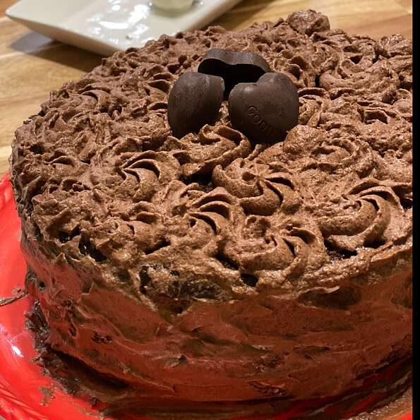

Chocolate Cake

Ingredients
- 2 cups sugar
- 1¾ cups all-purpose flour
- ¾ cup HERSHEY®'S Cocoa Powder
- 1½ teaspoons baking powder
- 1½ teaspoons baking soda
- 1 teaspoon salt
- 2 eggs
- 1 cup milk
- ½ cup vegetable oil
- 2 teaspoons vanilla extract
- 1 cup boiling water
- ½ cup butter or margarine
- ⅔ cup HERSHEY®'S Cocoa Powder
- 3 cups powdered sugar
- ⅓ cup milk
- 1 teaspoon vanilla extract
Instructions
-
Heat oven to 350 degrees F. Grease and flour two 9-inch round baking pans.
-
Stir together sugar, flour, cocoa, baking powder, baking soda and salt in large bowl. Add eggs, milk, oil and vanilla; beat on medium speed of mixer 2 minutes. Stir in boiling water (batter will be thin). Pour batter into prepared pans.
-
Bake 30 to 35 minutes or until wooden pick inserted in center comes out clean. Cool 10 minutes; remove from pans to wire racks. Cool completely. Frost with "PERFECTLY CHOCOLATE" CHOCOLATE FROSTING.
-
"PERFECTLY CHOCOLATE" CHOCOLATE FROSTING: Melt butter. Stir in cocoa. Alternately add powdered sugar and milk, beating to spreading consistency.
-
Add small amount additional milk, if needed. Stir in vanilla.